FIA国際モータースポーツ競技規則付則H項旗信号
JAF の公式サイトではありません。JAF が公開する PDF を自動変換した非公式の検索用アーカイブです。記載内容は必ず JAF の原本 PDF で出典をご確認ください。 検索と AI 質問つきのビューアで開く
P.1ＦＩＡ国際モータースポーツ競技規則付則Ｈ項旗信号
（レース競技における表示）
1. 競技長または副競技長によって使用される旗信号
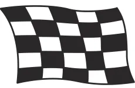
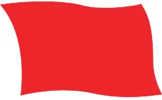
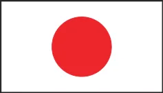
ａ）国 旗
ｂ）赤 旗
ｃ）黒と白のチェッカー旗
レース競技の中止。ドライバーは直ちに速度を落とし、ピットレーン（あるいは競技会特別規則に指定された場所）に進行すること。必要に応じ停車できる態勢をとること。追い越し禁止。
（通常）レーススタート。競技終了。
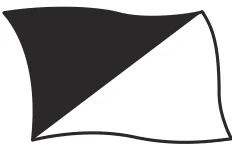
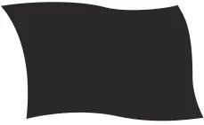
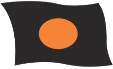
ｄ）黒 旗
ｅ）オレンジ色の円形のある黒旗ｆ）黒と白に斜めに2分割された旗
提示を受けたドライバーは、次にピットエントリーに近づいた時にピットあるいは特別規則書等に指定された場所に停止すること。
車両に機械的欠陥が生じている。提示を受けたドライバーは、次の周回時に自己のピットに停止すること。
スポーツ精神に反する行為をしたドライバーに対する警告。1度だけ表示される。
2. マーシャルポストで使用される旗信号
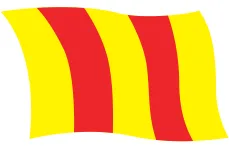
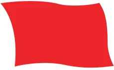
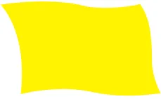
ａ）赤 旗
ｂ）黄 旗
ｃ）赤の縦縞のある黄旗
路面が滑りやすい。上記１.ｂ）を参照。
トラックわき、あるいはトラック上に危険箇所あり。速度を落とせ。追い越し禁止。意味に応じて2通りの方法で表示される。
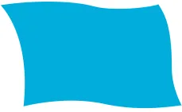
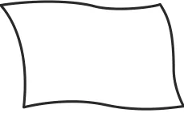
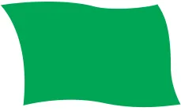
ｄ）青 旗
ｆ）緑 旗ｅ）白 旗
他の競技車両が接近し追い越しを行おうとしている。予選中とレース中とで異なる意味を有する。
トラック区間に低速走行車両がある。
トラックが走行可能（クリア）である。黄旗表示が必要となった事故現場の直後のマーシャルポストで提示される。